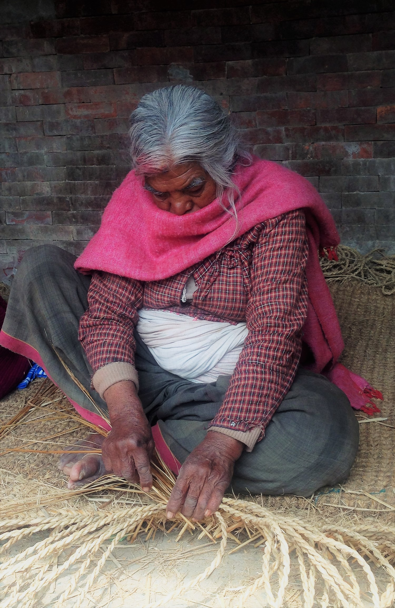

This video represents an initial needs assessment in Digam Village, Nepal. It was done by our partner TRT and describes some life conditions of the people we are collaborating with. While some grim realities are described, we've also found them to be a hopeful, creative and naturally peaceful people. We feel truly blessed to work with them.

Village Community Support
We work closely with the villagers to identify specific village needs, and strive to source or offer the needed resources and support.
- Agriculture training
- Education initiatives
- Creating value added products
- Natural disaster resilience
Leadership Training
Our focus is to empower leaders, especially women to come forward with renewed confidence in their capacity to make a positive change in their community.
- Emotional intelligence training
- Governance and communication skills
- Critical thinking
- Decision making skills


Current Projects:
We are currently working with The Relief Trust of Nepal, and the Rotary Club to bring meaningful relief to the people of Digam village. This village suffered greatly from the 2015 earthquake and hasn't gotten the help it needs to prosper and be prepared for any coming setbacks. Learn more about our wholistic approach to empower these corageous people.